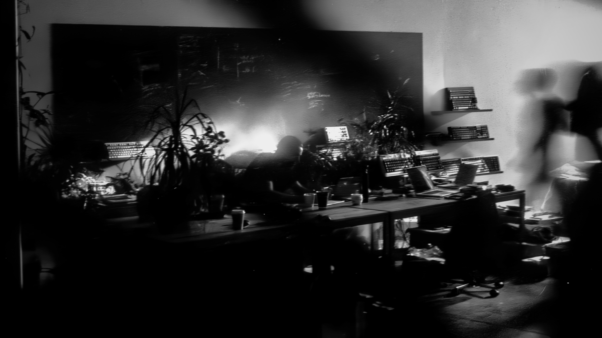
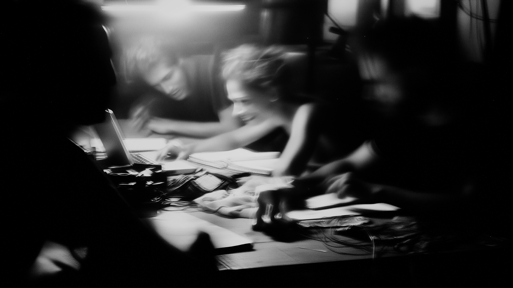
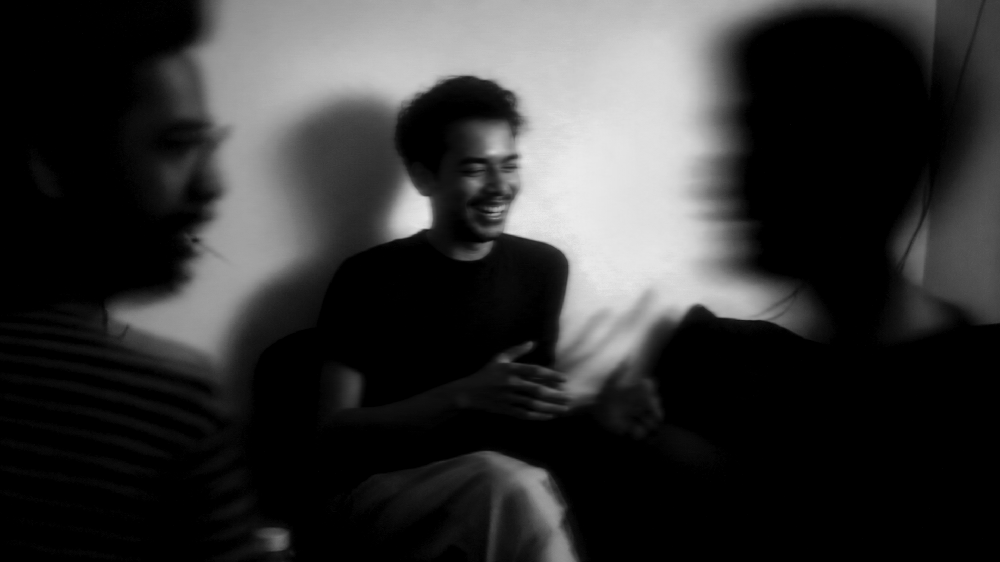
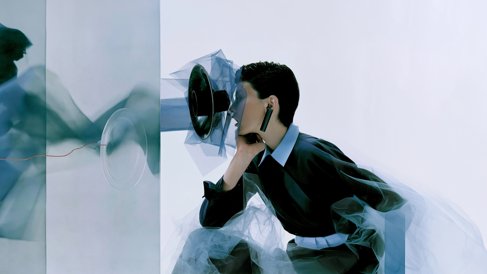
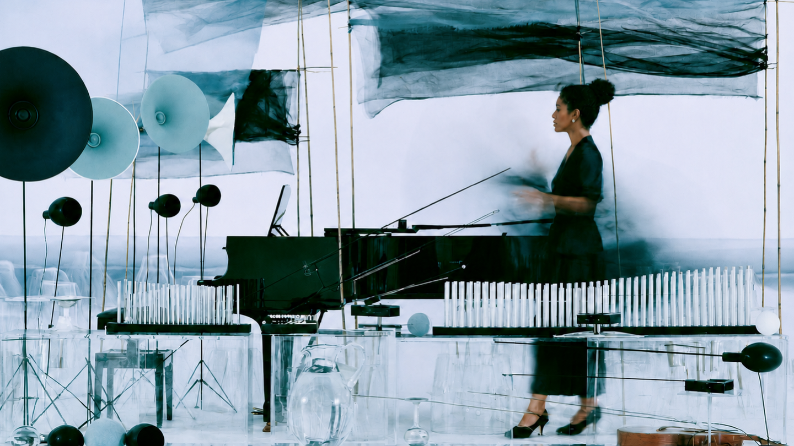

02 / 09The next generation of artists will make their own creative tools.
03 / 09Artists already learn complex software. Cursor is a new creative environment where artists can build tools around their practice while staying in control. They see underlying files and review every change before it becomes part of their work. Cursor Loves Indie expands who sees themselves as capable of building software.
04 / 09
05 / 09Cursor comes from indie origins. It carries the instinct to learn quickly, make its own tools, and stay close to the work.
06 / 09That same instinct shapes the campaign. Cursor partners with artists across visual art, film, fashion, and music. Cursor Cafés give them a place to meet and find collaborators. Reels and short-form content follow the process. Artists begin with: “I wish I had a tool that…” They show what they made with Cursor and nominate the next discipline to respond. Cursor Loves Indie becomes Indie Loves Cursor when the community answers back.
07 / 09
08 / 09
Figma Sound makes sound a design system material.
A component can have visual states and motion behavior. Now, it can have sonic behavior.
What will your interface sound like?
